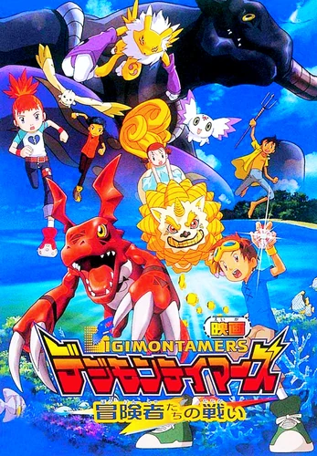
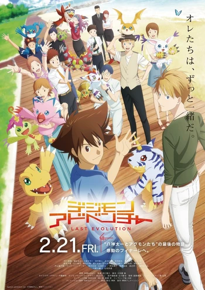

Digimon Adventure: ¡Nuestro Juego de Guerra!

Sinapsis
Digimon Adventure: ¡Nuestro Juego de Guerra! es la segunda película ambientada dentro de la serie y continuidad de Digimon Adventure. Cuando un Mortal Digimon Virus Digievoluciona y causa estragos masivos en Internet, sólo hay algunos de los Niños Elegidos para detenerlo y salvar a Tokio de un ataque con misiles.
Digimon Tamers: La Batalla de los Aventureros
Sinapsis
Los Tamers Takato, Ruki y Jianliang se encuentran de vacaciones de verano y se separan para disfrutar de estas. Takato visita a su primo Kai en Okinawa con Guilmon, Jianliang investiga un meteoro submarino con Terriermon y Ruki se queda atrás con Renamon para defender a su ciudad de los digimon malignos que aparezcan allí. Un Digimon maligno conocido como Mephismon surge y pone en marcha un plan que implica la nueva moda para mascotas digitales conocido como V-Pet para desactivar las comunicaciones en todo el mundo y permitir que los digimon pasen libremente al mundo real. Ahora, los Tamers deberán contar con la ayuda de Omnimon y Minami, la hija del creador de los V-Pets, con su digimon, al que ella llama Mei, para acabar con esta amenaza.
Digimon Adventure: Last Evolution Kizuna
Sinapsis
Película de Digimon Adventure para conmemorar el 20º aniversario del primer anime. Nos muestra a los niños elegidos de la primer temporada (Adventure) ya mucho mas grandes y con toda una aventura por venir.